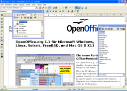

| Startseite | Writer | Calc | Impress | Draw |
|---|
| Datenbankwerkzeuge | Paketvorteile | Fallstudien | Systemvoraussetzungen |
Writer
Screenshots zu OpenOffice.org 1.1Die Freiheit, Ihre Dokumente großartig aussehen zulassen
WRITER hat alles, was Sie zu Recht von einer modernen, komplett ausgestatteten Textverarbeitung erwarten.
Einfach genug für ein schnelles Memo und gleichzeitig mächtig genug zur Erstellung kompletter Bücher mit Inhaltsverzeichnis, Diagrammen, Indizes etc. Sie haben die Freiheit, sich auf die Inhalte zu konzentrieren - während WRITER sich um das richtige Layout kümmert.
Der Auto-Pilot unterstützt Sie bei der lästigen Aufgabe, Standarddokumente wie Briefe, Faxe, Agendas oder Memos zu erstellen. Natürlich haben Sie die Freiheit, eigene Vorlagen zu erstellen.
{kind=link}
Der Stylist ermöglicht durch Formatvorlagen jedem Nutzer die Erstellung stilistisch hervorragender Texte.
Sie haben die Freiheit, eigene Ergänzungen in die AutoKorrektur-Wörterbücher einzutragen, die Sie bereits beim Schreiben unterstützen und gegebenenfalls Korrekturvorschläge unterbreiten.
AutoVervollständigung schlägt häufig verwendete Wörter und Textteile vor, schon während Sie schreiben.
AutoFormat kümmert sich um Formatierungen des Textes, während Sie tippen, und gibt Ihnen so die Freiheit, sich auf den Inhalt zu konzentrieren.
Textrahmen und Verknüpfungen gestatten Ihnen, Ihre Newsletter, Flyer, etc. exakt so zu gestalten wie Sie möchten.
Erhöhen Sie den Nutzen Ihrer umfassenden komplexen Dokumente, indem Sie Inhaltsangaben oder Indizes, bibliografische Bezüge, Illustrationen, Tabellen und andere Objekte integrieren.
Sie haben die freie Wahl, welche e-Mail Software Sie einbinden möchten - WRITER stellt die notwendigen Schnittstellen zur Verfügung.
Machen Sie Ihre Dokumente frei verfügbar - WRITER exportiert HTML für das Web oder auch in das Portable Dokument Format (.pdf) und garantiert so, dass Ihre Leser genau das sehen, was Sie geschrieben haben.
Natürlich haben Sie die Freiheit, Ihre älteren Dokumente weiterhin zu nutzen oder in anderen gängigen Formaten zu speichern, um sie mit Menschen auszutauschen, die andere Software nutzen.